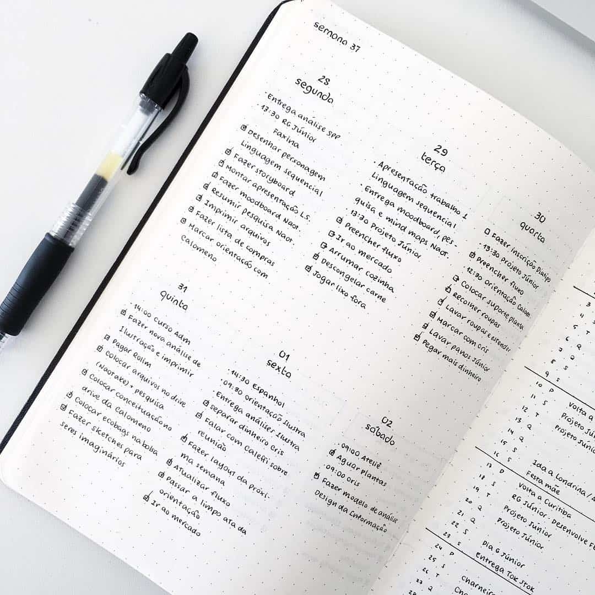

Bullet Journal
We lead busy lives, but being busy doesn't necessarily mean we're being productive. Productive means that we're using our time wisely by focusing on what matters. Monthly Migration helps us accomplish this by weeding out distractions.
Journals
From our signature collection. Each notebook has a hardcover bound with PU leather (100%
vegan) with a duck finely debossed on the cover. Printed on the inside cover of the notebook
are duck footprints that are so cute, you just want to tickle them.
Our paper? Well, we are the oldest established paper company in Lebanon and the
region, we know a thing or two about paper. Each page of 100gsm silk cream acid free
fountain-friendly FSC-certified paper is micro-perforated with a total of 96 sheets or 192
pages. And our notebooks open as flat as a pancake.
The paper used is acid-free, a depiction of longevity, archive-ability and
preservation.
Yes, yes, of course they have an inner pocket, bookmark and an elastic closure!
Oh, almost forgot to mention the pen holder, just perfect.
https://us.dingbats-notebooks.com/
Pens
I've experimented with different brands of gel pens over the years, but I keep coming back to the Pilot G2. The G2 is one of those pens that people either love or hate - I think a lot of the hate comes from the fact that Pilot advertises it as the "world's most popular pen" or something like that, and people (especially on the Internet) love a good takedown of whatever's popular. But there are many reasons this pen deserves that title: it's widely available (including in drug and grocery stores), it's comes in various tip sizes and ink colors, and it's a dependable writer that doesn't dry up or skip.
https://www.gentlemanstationer.com/blog/2016/9/9/the-pilot-g2-gel-pen
Putting it all together

At the very end of each month, set up a new Monthly Log. Once that's done, review the pages of the month gone by. Chances are, you didn't get around to completing all your Tasks. That's fine! What's important is figuring out which incomplete Tasks are worth your limited time and energy moving forward. Strike out those that aren't, and migrate the ones that are.
To Migrate a Task, simply turn the “•” into “>” to indicate that you’ve moved that Task forward onto the Task Page of your new Monthly Log or into an appropriate Collection. If you wrote down a book title for example, you would migrate that entry into your "Books to Read" Collection. Once you've Migrated open Tasks, check your Future Log. See if any Tasks or Events listed there have become current. If so, migrate those entries from your Future Log into your new Monthly Log.
It may seem like a lot of effort to have to rewrite all these things, but that’s intentional. This process makes you pause and consider each item. If an entry isn’t even worth the effort to rewrite it, then it’s probably not that important. Get rid of it. The purpose of Migration is to surface what's worth the effort, become aware of our actions, and to separate the signal from the noise. This is where BuJo shifts from a system, into the practice...